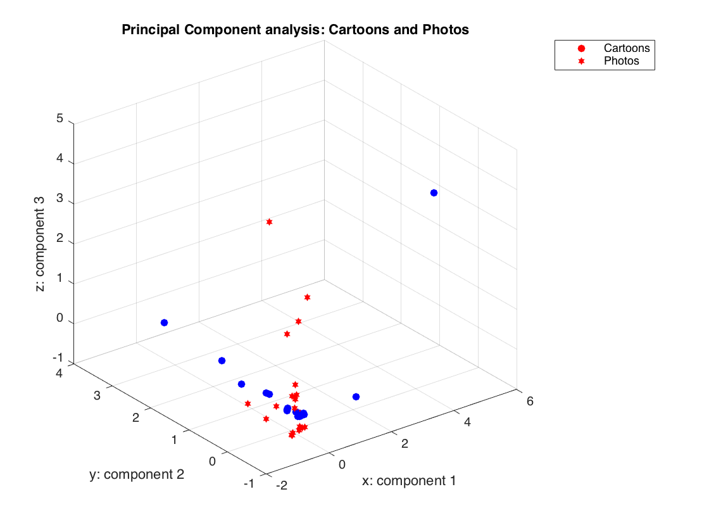

Contents
================ Principal Component Analysis ===============
Initialization
clear; close all; clc
================== Part 1: Load Example Dataset ===================
X_c = load('CSV_files/Cartoons.csv');
X_c = X_c';
X_p = load('CSV_files/Photos.csv');
X_p = X_p';
[m, n] = size(X_c);
=============== Part 2: Principal Component Analysis ===============
Implementing PCA, a dimension reduction technique.
fprintf('---------------------------------------------\n');
fprintf('Running PCA on the two datasets.');
fprintf('\n---------------------------------------------\n');
[X_norm_c, mu_c, sigma_c] = featureNormalize(X_c);
fprintf('---------------------------------------------\n');
fprintf('Calculating the best possible k-value.');
fprintf(['\n(assuming we were not limited by three '...
'\ndimensions for visualisation purpuses).']);
fprintf('\n---------------------------------------------\n\n');
fprintf('Best k for the Cartoon set:\n');
getBestK(X_c);
K = 3;
[U_c, S_c] = pca(X_norm_c, K);
[X_norm_p, mu_p, sigma_p] = featureNormalize(X_p);
fprintf('Best k for the Photo set:\n');
getBestK(X_p);
[U_p, S_p] = pca(X_norm_p, K);
total1 = 0;
for i = 1:K
for j = i:n
if i == j
total1 = total1 + S_p(i,j);
end
end
end
variance_retained = total1/trace(S_p);
fprintf('For visualisation purposes k = 3.\n');
fprintf('Variance retained for current k: %f', variance_retained);
fprintf('%%. \n\n');
---------------------------------------------
Running PCA on the two datasets.
---------------------------------------------
---------------------------------------------
Calculating the best possible k-value.
(assuming we were not limited by three
dimensions for visualisation purpuses).
---------------------------------------------
Best k for the Cartoon set:
The best k-value is: 7
Variance retained for the best k: 0.990071%.
Best k for the Photo set:
The best k-value is: 8
Variance retained for the best k: 0.991987%.
For visualisation purposes k = 3.
Variance retained for current k: 0.428756%.
=================== Part 3: Dimension Reduction ===================
Implementing the projection step to map the data onto the
first k eigenvectors. The code will then plot the data in this reduced
dimensional space.
fprintf('---------------------------------------------\n');
fprintf('Dimension reduction on the two datasets.');
fprintf('\n---------------------------------------------\n');
figure;
scatter3(X_norm_c(:, 1), X_norm_c(:, 2), X_norm_c(:, 3), 'filled', 'rh');
hold on;
grid on;
scatter3(X_norm_p(:, 1), X_norm_p(:, 2), X_norm_p(:, 3), 'filled', 'bo');
rotate3d on;
xlabel('x: component 1');
ylabel('y: component 2');
zlabel('z: component 3');
h = zeros(2, 1);
h(1) = plot(NaN, NaN, 'rh');
h(2) = plot(NaN, NaN, 'bo');
legend(h, 'Cartoon','Photo');
title({'Principal Component analysis:';'Cartoons and Photos'})
---------------------------------------------
Dimension reduction on the two datasets.
---------------------------------------------
